Frederiksborg Castle houses an extensive colleciton of Danish paintings. Pictures of old kings, famous people of Denmark, battles, wars, etc. One of the DIS professors took us on a tour of the castle and the collection. He was fond of saying, "And here is a Danish King, Christian the Fourth." A few minutes later, we'd see another picture of an old man to which he'd say, "Another Danish King. Remember, once you've seen one, you've seen them all." We'd then hussle to the next painting. Sometimes, he would point out the truly special paintings of an important time in Danish history, or an important king, or a national icon. But he was straighforward with the group -- he would not dwell on paintings that are mostly interesting to specialists in the field. His style of narration also gave way to drawing parallels with modern pop-culture, which made for an interesting tour.
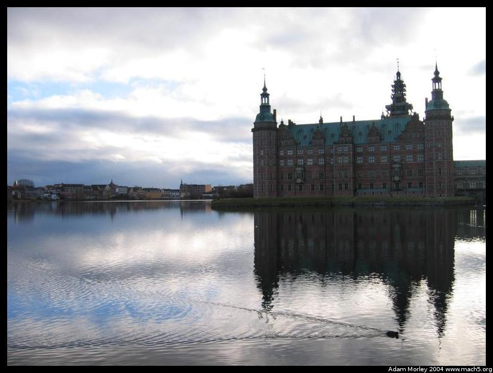
Frederiksborg Castle, seen from the garden side. It houses an extensive painting collection.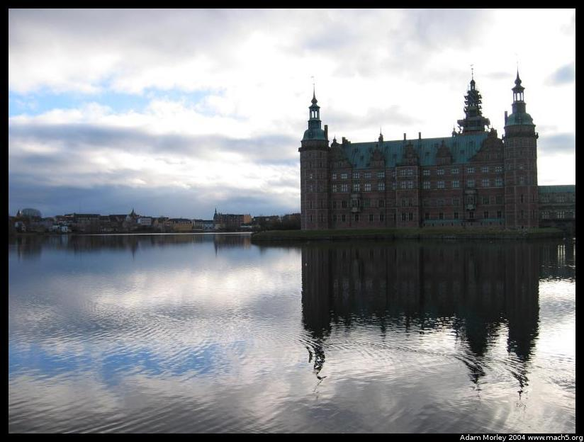
Even the Powershot S400 has exposure compensation on the fly. -1/3.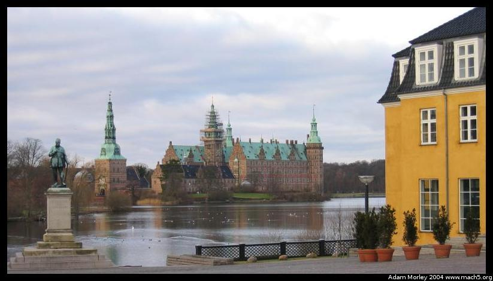
The castle seen from town, on my way to the train station. Even out here, 7 zones from downtown Copenhagen, over an hour by train, they have a quaint walking street to do their shopping on.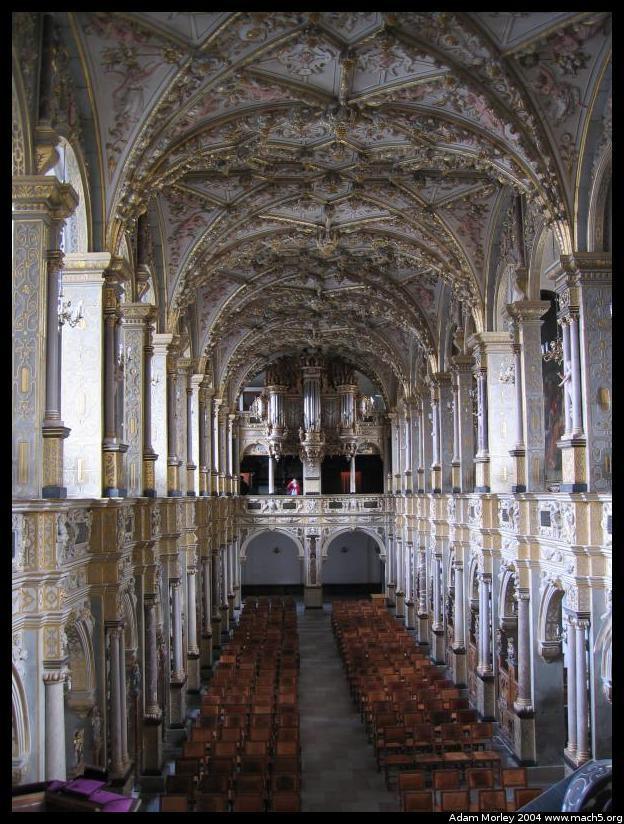
The inside of the of the cathedral at the castle. This cathedral houses the plaques for those who have received awards from the Royal Family of Denmark.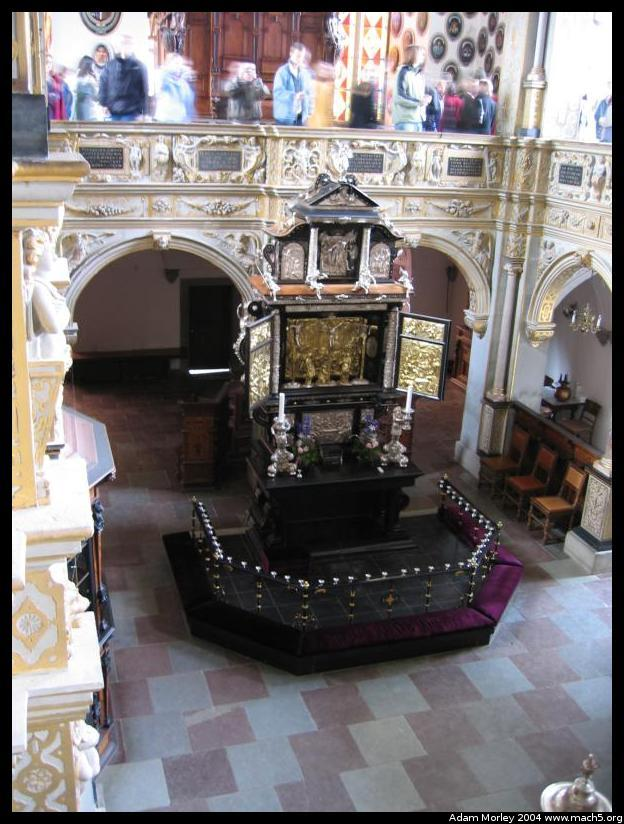
Closeup of the altar. Mini-tripods (the flexible $5 kind) are ultra handy, thanks mom!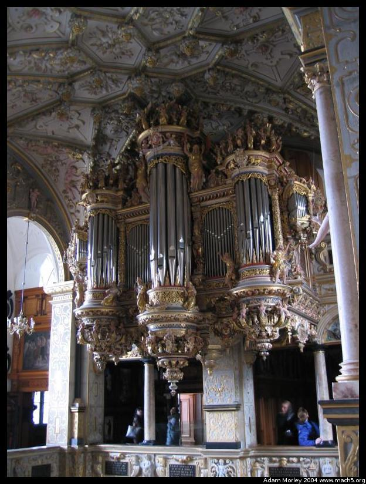
And the pipe organ.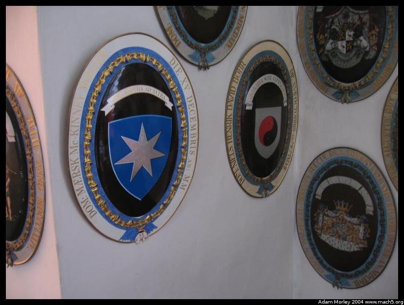
The highest order is called the "Order of the Elephant," which no one has been able to explain to me yet. Only two non-politicians have received the award in the last hundred years. They are shown here -- Mærsk Mc-Kinney Møller, the richest man in Denmark who owns a global shipping company and Niels Bohr. Møller has donated large sums of money to public projects and the arts, which disproves an earlier theory I heard that only Americans donate large sums of money to things like art museums, opera houses, etc. You should all remember Bohr for the "Bohr Model of the Atom", and his work in nuclear physics.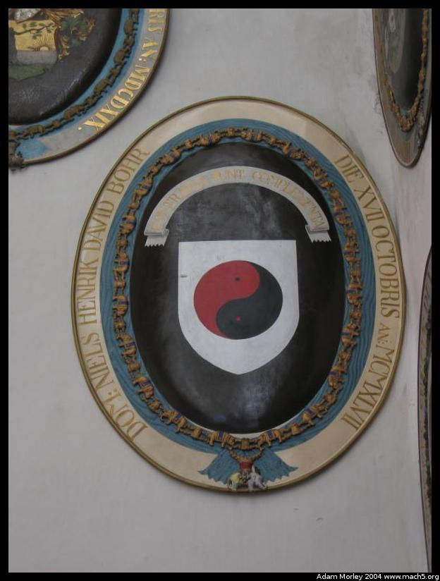
A closeup of Niels Bohr's plaque. He picked the ying and yang because of his work on complementarily in quantum physics (balance of opposites).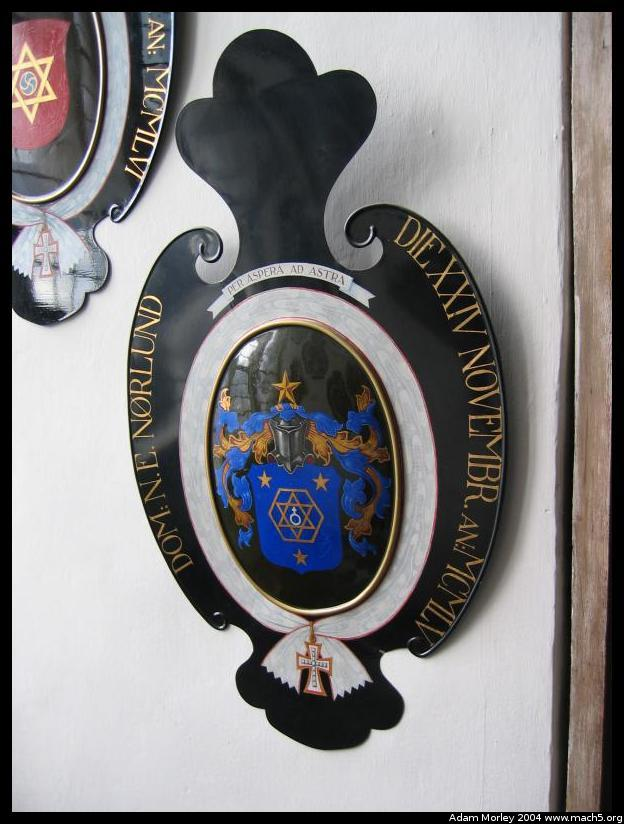
Please note that Møller's motto was the same as this one: "per aspera ad astra," meaning something like, "over the thorns up to the stars."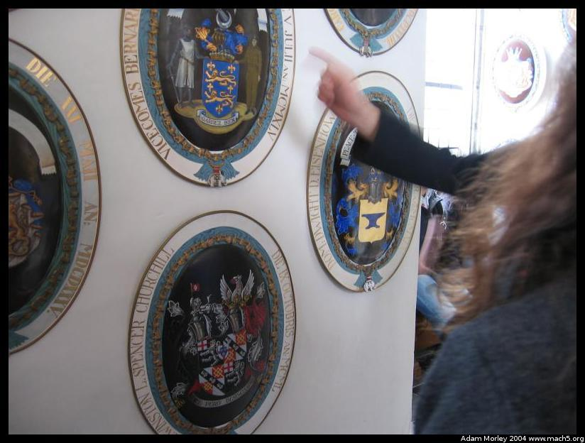
Eisenhower and Churchill.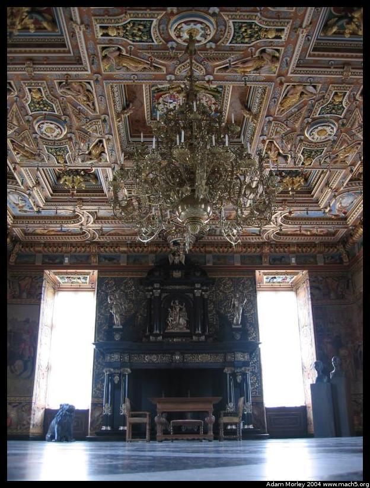
The castle also has a party hall, where the king or other royalty could hold parties. It does not see much use now, but it is quite the impressive party hall.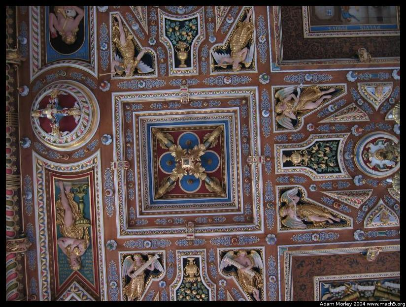
With a great ceiling, always remember to look up. Use the power of the two-second self-timer and the floor.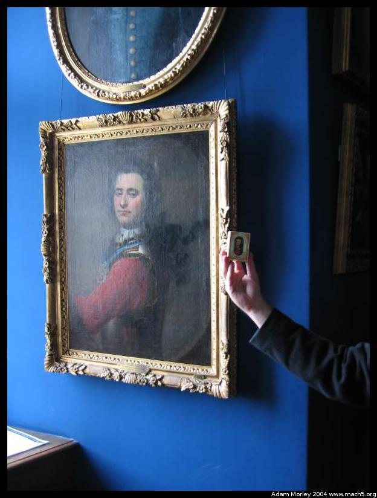
One of Denmark's national icons. He is now on matchboxes. His name escapse me, but he is famous for winning a battle against the Swedes by marching his soldiers on land while the Swedes sat in the harbor deciding whether to invide. By marching his soldiers in circles it looked like his force was far larger than it really was, scaring away the Swedes and winning the battle. He was Danish, and the matches were originally produced by a Danish company in Denmark. The company recently purchased a Swedish match-making company, and now the matches are made in Sweden. Swedes making matches for the Danes depicting a Danish war hero who defeated the Swedes.Frederiksborg Castle is definately worth a trip if you're ever in and around Copenhagen for a while. The train ride alone is worth it, as it takes you up north across Zealand (the island Copenhagen is on), through suburbia, farmland, and smaller towns. It is many zones away from downtown, and will run you 56 kroner for a one way ticket (cheaper using passes/punchcards I think). So just under $10.
Adam can be reached at adam dot morley at gmail dot com